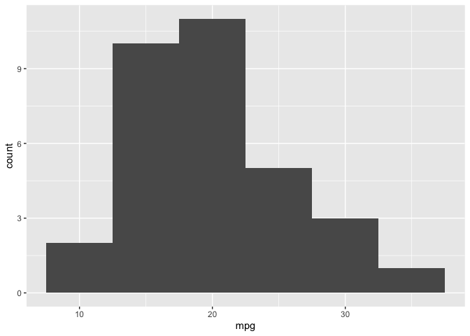

Template for Reinstein bookdowns
2021-11-05
Abstract
This ‘book’ organizes the project and helps others understand it and learn from it1 About this work
<–! bookdown_start –> The first bit of content meant ‘only for the bookdown’ goes here.
This contains multiple lines blah blah
<–! bookdown_end –>
Note to friends I’ve asked to look at this book…
Thanks for looking at this.
1.1 Preface
Testing a Zotero reference: (Becker 1974) (should cite Becker, 1974). (Adena and Huck 2019) – should cite Adena 2019.
Leaving feedback, asking questions, seeking other’s feedback/notes/questions:
All feedback is appreciated, and I will try to respond to your questions. An easy way to take notes and leave feedback: sign up for ‘hypothes.is’ and you can put your ‘public notes’ directly on this web book. Don’t worry, these comments are saved even if the web book is updated.
an example of a quotation example of a quotation example of a quotation example of a quotation example of a quotation example of a quotation example of a quotation example of a quotation example of a quotation.
This book is in Open Review. We want your feedback to make the book better for you and other students. You may annotate some text by selecting it with the cursor and then click the on the pop-up menu. You can also see the annotations of others: click the in the upper right hand corner of the page
If you have benefitted from this work (and you are not one of my students), please consider giving me some sort of ‘’kudos’’ on Twitter or wherever. One way to materially express gratitude: make a donation in my honor to an effective and international charity, such as those listed at givewell.org. If you make this donation and share it on a social media site with the hashtag #DRWritingEcon, that would be greatly appreciated.
Licence
Essentially:
You can use this freely and create other versions as long as you give proper attribution, and you make your work publicly available
You cannot sell this or use it, or any part of it, for commercial purposes
https://creativecommons.org/licenses/by-nc-sa/4.0/

Researching and writing in Economics (Essays, term paper, dissertations for Economics undergraduates and MSc students) by David Reinstein is licensed under a Creative Commons Attribution-NonCommercial-ShareAlike 4.0 International License.
1.2 Citations
Let’s cite a paper here: (Lakens 2014); I don’t think I needed the brackets though (Lakens (2014) would also have worked).
Testing another one: (Alec Stephenson 2013)
It is referring the contents of bibtex files, mentioned in the index.Rmd file in the line bibliography: ["references.bib"]
This can be more ‘automated’ with the visual editor … turning on Zotero (necessary?) and inserting a reference from the linked library, this should automatically be added to references.bib
Or you can add it manually (there was the ‘citr’ plugin a while ago, but that might now confuse things.)
Adding one manually: (Akerlof George A. and Kranton Rachel E. 2000) … let’s see if it works
1.3 Examples of the sort of fancy interactive stuff one can incorporate in this web book
Thanks to Yihui and many others, this book should permit lots of flexible tools. Trying some of these below (with code shown, but it could also be hidden). Thanks Yihui for the Bookdown package.
We can have internal links to previous sections like here, to the about section.
1.3.1 Questions with folded answers, folded expanded discussions
Can I ask you a question? (Answer below the fold.)
Yes: I just did.
<–! bookdown_start –> The second bit of content meant ‘only for the bookdown’ goes here.
With multiple lines.
second bit ends. <–! bookdown_end –>
I can also put expansive detail into a fold, to avoid clutter. If you want to know more about spittlebugs, feel free (to open the fold below).
These families are best known for the nymphal stage, which produces a cover of foamed-up plant sap visually resembling saliva; the nymphs are therefore commonly known as spittlebugs and their foam as cuckoo spit, frog spit, or snake spit. This characteristic spittle production is associated with the unusual trait of xylem feeding. Whereas most insects that feed on sap feed on the nutrient-rich fluid from the phloem, Cercopidae utilize the much more dilute sap flowing upward from the roots via the xylem. The large amount of excess water that must be excreted and the evolution of special breathing tubes allow the young spittlebug nymphs to grown in the relatively protective environment of the spittle.
Indirect source: wikipedia: Froghopper, accessed 21 Feb 2020
A Shiny app
knitr::include_app("https://yihui.shinyapps.io/miniUI/", height = "600px")My web pages
(This page couldn’t embed)
knitr::include_url("https://davidreinstein.wordpress.com/")Scary math
\[\Theta = \begin{pmatrix}\alpha & \beta\\ \gamma & \delta \end{pmatrix}\]
R code and data
These are “code chunks”
x <- 1 + 1
rnorm(10) # 10 random numbers## [1] 0.965 -1.234 -0.523 0.115 1.092 0.980 -0.173 0.939 0.066 -0.618plot(dist ~ speed, cars) # a scatterplotFigure 1.1: A figure caption.
And I can refer to the results of the r code in the text itself, e.g., by writing
`` one plus one equals ` r x ` ``I get … one plus one equals 2.
1.3.2 Tables and graphs
We can make tables from data (but these might struggle exporting to markdown formats?)
Below, this defaults to an html styling
(but in the md substitution code I swap in ‘pipe styling’)
#install.packages("magick")
#install.packages("webshot")
#webshot::install_phantomjs(force=TRUE)
#library(webshot)
#library(magick)
mtcars %>% as_tibble() %>%
janitor::tabyl(cyl) %>%
kable(caption="don't forget a caption") %>%
kable_styling() | cyl | n | percent |
|---|---|---|
| 4 | 11 | 0.34 |
| 6 | 7 | 0.22 |
| 8 | 14 | 0.44 |
#as_image(width = 8) (this fails)And using the gtsummary package:
library(gtsummary)
# make model and tbl_regression object
m_linear <- lm(mpg ~ cyl, data = mtcars)
t1 <- tbl_regression(m_linear)
# Use function from gt package to save table, after converting to
# gt object using as_gt()
#gt::gtsave(as_gt(t1), file = file.path(tempdir(), "temp.png"))And of course, graphs aka ‘visualisations’:
(
mtcars_plot <- mtcars %>%
ggplot(aes(x=mpg))
+ geom_histogram(binwidth=5)
)
Other fancy stuff
Key Concept 5.4
Heteroskedasticity and Homoskedasticity
- The error term of our regression model is homoskedastic if the variance of the conditional distribution of \(u_i\) given \(X_i\), \(Var(u_i|X_i=x)\), is constant for all observations in our sample: \[ \text{Var}(u_i|X_i=x) = \sigma^2 \ \forall \ i=1,\dots,n. \]
1.3.3 Interactive questions
1.3.4 Videos
1.4 Types of notes within text
“Aside” notes look like this.
Warnings look like this.
1.4.1 A margin note
What about tufte-style margin notes? *
* If you are considering pursuing an MSc or PhD this will typically be centered on doing research; it’s worth knowing whether this is for you before diving in. Doing research is also a key component of much professional work in the private and public (government) sectors, including at ‘think tanks,’ some government agencies, and many private consulting and ‘data analytics’ firms.
Notes for instructors and course organisers
Note: related pptx slides (covering Ch 1-3, adapted to Exeter) are downloadable:
1.5 We link back here in the next chapter – check it out
Jump to next chapter
1.5.1 A fun acronym
Six simple rules for writing a good paper (and, incidentally, for getting a good mark)
Frame your topic as an interesting, well-defined Economic question. Demonstrate that you understand your question.
Explain what others have written about your topic and which techniques they used. Critically discuss the strengths and limitations these. Explain how these relate to and inform your own work. Cite correctly and do not plagiarise.
Apply economics (and econometrics) to your question. Demonstrate an understanding of your approach and techniques.
Organise and present your work clearly, including an outline and labels and explanations of any tables, graphs, and equations.
Write clearly, logically, and in a professional academic style.
If you are aiming to produce a great paper, make an original contribution or insight. (This can be a small insight, and it is not always necessary for a top mark.)
Figure 1.2: Just remember…
Just remember the simple acronym “ECAOAcIn”:1
Economic question – Critical discussion – Apply economics – Organise/present well – Academic writing – original Insight
List of works cited
(Isn’t that catchy?)↩︎